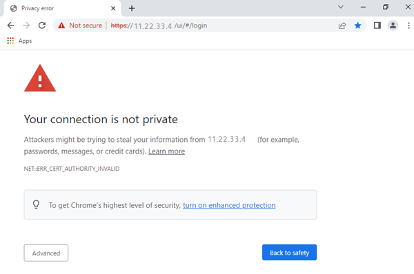
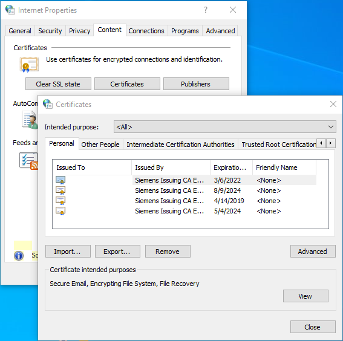
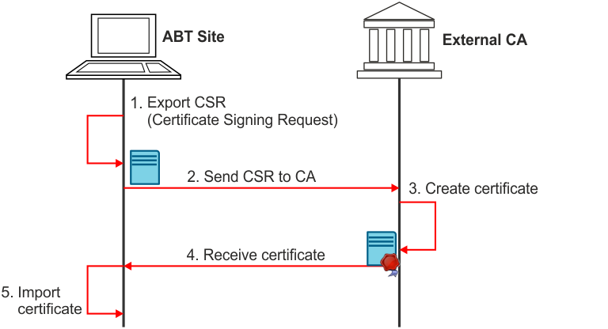
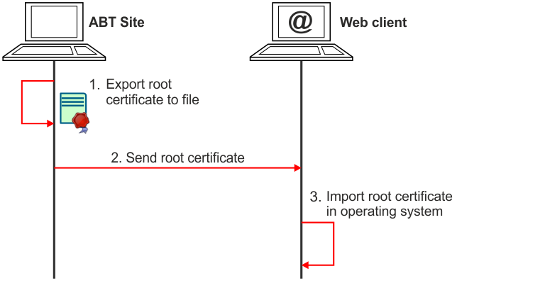
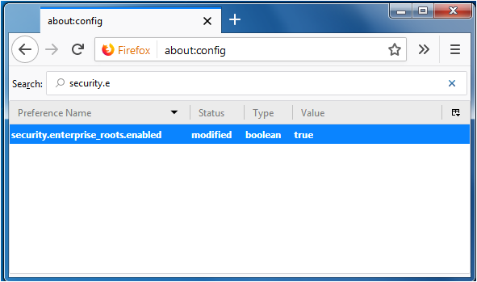
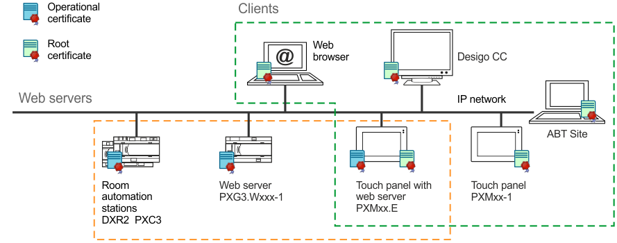
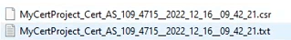
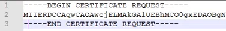

运营证书
在 Desigo 系统中，操作证书是数字证书，可实现与 Desigo 设备中嵌入的 Web 服务器的安全 HTTP (HTTPS) 通信或设备之间的安全 BACnet (BACnet/SC、WSS://) 通信。
项目中的 Web 服务器和 BACnet/SC 的操作证书不同，但生成和处理证书的基本工作流程是相同的。
看https://en.wikipedia.org/wiki/Public_key_certificate.
以下设备类型支持其内置 Web 服务器中的操作证书：
- PXC3.Exxx-1
- DXR2.Exxx-1
- PXG3.Wxxx-1
- PXG3.Wxxx-2
- PXMxx-1
- PXMxx.E
- PXC4..
- PXC5.E003
- PXC5.E24
- PXC7.E400x
Benefits of certificates
使用 TLS（如 HTTPS 或 WWS 中所示），所有与 Web 服务器或 WebSocket 的通信都会被加密，以防止窃听或更改通信。此外，网络客户端用户完全有信心他们连接到的是正品网络服务器，而不是假冒网络服务器。如果用户无法通过 HTTPS 连接，则会收到通知，通常会在地址栏中显示“不安全”。如果出现证书问题，Web 浏览器会显示错误消息。这通常表示无法验证服务器。用户可以决定继续，但不建议这样做。
错误或过期的证书也会在 BACnet/SC. 中生成错误消息。但是，由于 BACnet/SC 是机器对机器 (M2M) 通信，相应的 WebSocket 错误不会涉及直接向用户发送 GUI ，而是会在 BACnet 系统上触发错误，然后将其作为任何其他常规 BACnet 错误进行处理。

What are certificates?
证书颁发机构（CA）颁发每个证书，是用户共同信任的实体。
在 Desigo 中，为每个 Web 服务器提供单独的证书。 CAs 有自己的证书，称为根证书。
证书包含多个字段。最相关的是：
- Identity, such as the IP address of a web server
- Cryptographic key for the secure communication
- Validity period
- Information about the CA that created the certificate
- Signature, which is a proof of authenticity
签名是由 CA 创建的安全代码，无法伪造，这就是创建证书的过程通常称为签名的原因。
客户端必须已拥有 CA 创建的证书才能验证证书签名。这就是为什么 Web 浏览器和操作系统默认信任多个 CAs。用户和管理员可以添加其他 CAs，例如公司 CAs。
CAs 通常分为多个级别，其中一个根 CA 带有一个或多个中间 CAs。
在 Windows 中，证书位于Internet Options > Content > Certificates.
您还可以通过键入来查找证书cert进入Windows Search Bar.

Certificate types
ABT 站点管理 Desigo 中的证书。您可以为每个设备选择以下选项：
- Internal CA (default): ABT as the CA.
- Certificates are automatically handled by ABT.
- Each project has its own root certificate.
- External CA: CA provided by an external organization. For example, a CA could be provided by the customer’s IT department or by the system operator.
- May be requested by high security projects.
- Requires additional workflows.
- No certificate.

对于内部 CA：拥有 ABT 项目副本的每个人都可以为该项目创建新证书。因此，在分发和存储 ABT 项目文件（包括通过 Pack & Go 生成的导出文件）时要小心。
详细信息请参见ABT Site Online Help.
Importing certificates from an external CA
下图说明了如何从外部 CA 导入操作证书。可以同时处理多个设备。

Exporting root certificates
Web 客户端需要 CA 根证书来验证操作证书。指定根证书的方法取决于客户端类型：
- Desigo touch panels: ABT Site automatically downloads root certificates.
- Desigo CC and web browsers:
- External CA: Provided by the administrator of the external CA, for example, the customer’s IT department.
- Internal CA: The root certificate must be exported from ABT Site and imported on the client.
– Desigo CC: An administrator with access to the OpenSSL-tool creates an operational certificate for Desigo CC, plus a CSR. This is handed over as files to ABT Site (or another CA), signed by it and returned to Desigo CC on file level.
下图说明了如何导出根证书，从 ABT 站点导出并在客户端上导入。

大多数 Web 浏览器使用操作系统的证书存储，例如 MS Windows 证书存储，但情况并非总是如此。
例如，Mozilla Firefox 有自己的证书存储区，需要您在 Firefox 中导入根证书。您可以通过将 about:config > security.enterprise_roots.enabled 设置为 true（默认情况下设置为 false）来更改此设置。

在客户计算机上安装根证书或更改安全设置之前，请咨询客户的 IT 部门。
Certificate deployment
安装所有操作证书和根证书后，情况如下：

具有嵌入式 Web 服务器的设备拥有自己的操作证书，其中包含 IP 地址或完全限定域名 (FQDN)。每个客户端都有一个或多个根证书，某些设备可以同时是客户端和服务器（即触摸屏和嵌入式服务器）。
每个证书都有一个有效期，以两个具有定义生命周期的日期表示，并且必须定期更换。
CA 决定寿命，内部 CA 的默认值为五年。当到期日期临近时，设备会触发 BACnet 警报。一旦过期，客户端每次连接设备时都会显示警告，并且可以配置为更具限制性（包括停止通信）。
Standard format and content
由外部 CA 创建的文件必须满足以下要求（如果不是这种情况，请联系客户支持）。
- The files must include the device certificate in PEM format, followed by the certificates from the certificate authorities using the syntax below. The intermediate certificate can be missing or repeated for every intermediate certificate authority used in the chain of trust.
-----BEGIN CERTIFICATE-----
（设备证书）
-----END CERTIFICATE-----
-----BEGIN CERTIFICATE-----
（中级证书）
-----END CERTIFICATE-----
-----BEGIN CERTIFICATE-----
（根证书）
-----END CERTIFICATE-----
- The device certificates includes an X.509v3 extension with Subject Alternative Name that includes the device IP address or DNS name (must match the certificate signing request).
- ABT Site supports two files *.csr and *.txt.

- Note: The file *.csr contains a file header. The *.txt does not have a header.
